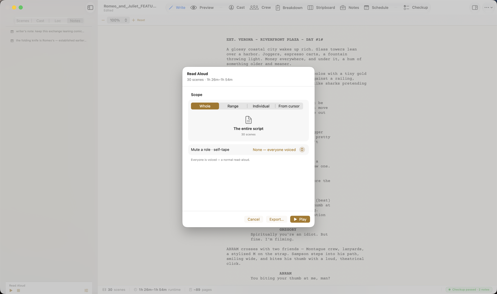

The Read Aloud sheet
Open it from Tools → Read Aloud…, or the options button on the sidebar's Read-Aloud transport.

- Scope — the whole script, a scene range, an individual scene, or from the cursor onward.
- Mute a role · self-tape — silence one character so you can read their lines against the rest of the cast. Decoupage leaves a gap where the muted role speaks, and a soft cue tone can mark it so you know when to come in — exactly what you want for a self-tape.
- Keep action lines — include the narrator reading action, or dialogue-only.
- Play performs it live; Export saves an audio file (
.m4a) you can listen to anywhere.
Who says what
Two voice settings shape the read, and you set them elsewhere:
- Character voices — each character's voice comes from their profile in the Cast tab. Decoupage assigns a distinct voice to each speaking role automatically; override any of them, and use the audition button there to hear a voice before you commit.
- Narrator voice — scene headings and action use the narrator voice set in Document Settings → Read Aloud (it defaults to a Decoupage voice named George).
Decoupage ships its own natural-sounding voices, and your Mac's system voices are available too.
The sidebar transport
While you write, a small Read-Aloud transport sits pinned at the bottom of the navigator — play, pause, and stop, plus the options button that opens the sheet above. It's the quick way to hear the scene you're working on without leaving the editor.
Note. The first time you use Decoupage's own voices after installing, the app downloads them once (it shows a small progress banner and uses system voices in the meantime). After that they're on your Mac and work offline.
In short
- ✓Tools → Read Aloud… (or the sidebar transport) — Scope + Play (live) or Export (
.m4a). - ✓Mute a role for a self-tape; a cue tone marks your entrance.
- ✓Character voices come from the Cast tab; the narrator voice from Document Settings.
- ✓Decoupage's own voices download once on first use, then work offline.